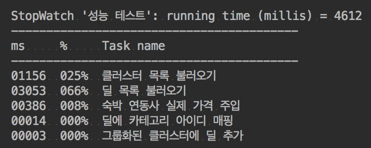

문제점

Time은 데이터 전체를 파싱하는데 걸린 시간이니 무시하고…
트래픽이 13MB 남짓…
사용자가 조건을 바꿔서 검색을 한다면 데이터 광탈범이 될 가능성이 다분한 상황이었다.

응답 시간이 22초 남짓…
원인 파악
쿼리

숙박 연동 최저가는 jooq로 불러오고 있고, 숙박 연동사 테이블은 jpa로 불러오고 있음.
순수 네이티브 쿼리가 아닌 이상 퍼포먼스가 제대로 나오지 않을 것으로 판단됨.

실제로 필요한 건 특정 필드 뿐인데 모든 필드를 다 긁어오고 있어서 쿼리 실행속도가 느려진 것임.
용량

이 응답값에는 세 가지 문제점이 존재한다.
이 데이터를 줄였을 때 1MB 정도 가량이 줄어들었다.
treeAllId라던지, clusterName이나 빈 배열 등등 다른 값들을 가지고 유추할 수 있는 값들을 제거하였다.
딱히 이 부분에서는 데이터를 크게 줄일 수가 없었다.

이미지의 URL을 담고 있는 컬럼을 불러와서 필요한 정보만 뿌려주는 게 아니라 모든 데이터를 가공없이 뿌려주고 있었다.
이 컬럼의 데이터가 하나의 딜에 대한 데이터의 3/4 이상을 차지하고 있었다.
대부분의 쓸 데 없는 데이터가 여기서 낭비되고 있었다.
문제 해결
아예 API 서버로 따로 분리
맵 API는 방대한 양의 데이터를 가져오므로 서버의 리소스 사용이 많아 아예 별도의 서버로 구축하기로 판단했다.
빠른 응답속도 보장
클러스터와 딜을 함께 내려주다보니 초기에 유저가 기다려야하는 속도는 15~20초 남짓 대기해야한다.
굳이 딜 목록까지 내려 줄 필요가 없다고 판단이 들어서 클러스터(갯수 포함) 따로 딜 따로 내려주게 끔 API를 두 개로 분리하였다.1
2/api/v4/map/hotel (클러스터)
/api/v4/map/hotel/deals (딜, 기존 API)
클러스터를 그리기 위한 클러스터 API는 응답 속도가 1~2초 남짓이라 유저가 불편을 느끼지 못할 수준이다.
유저가 방심(?)하는 사이에 몰래(?) 딜을 뿌려주는 API를 호출하고 있으면 웬만한 유저들에게는 불편함을 주지 않을 것이다.
중간 점검


아직 이정도 시간 가지고는 서비스 하기에는 무리가 있어 보였다.
캐싱하기
딜들과 카테고리 ID를 매핑하는 부분과 숙박 딜의 실제 가격을 주입하는 부분은 애초부터 판매 중인 모든 딜에 대한 정보만 들고있으면 된다.
즉, 조건에 구애받지 않는다는 뜻이다.1
2
3
4
5
6
7
8
9
10
11
12
13
14
15
16
17
18
19
20
21
22
23
24
25
26
27
28
29
30
31
32
33
34
35
36
37
38
39
40
41
42
43
public class Job {
private HotelDealMinPricesMapper hotelDealMinPricesMapper;
private DealPartnersMapper dealPartnersMapper;
private TreeDealMapMapper treeDealMapMapper;
private CategoryIds categoryIds;
private HotelPartnersAndPrices hotelPartnersAndPrices;
public Job(
HotelDealMinPricesMapper hotelDealMinPricesMapper, DealPartnersMapper dealPartnersMapper,
TreeDealMapMapper treeDealMapMapper, CategoryIds categoryIds, HotelPartnersAndPrices hotelPartnersAndPrices
) {
this.hotelDealMinPricesMapper = hotelDealMinPricesMapper;
this.dealPartnersMapper = dealPartnersMapper;
this.treeDealMapMapper = treeDealMapMapper;
this.categoryIds = categoryIds;
this.hotelPartnersAndPrices = hotelPartnersAndPrices;
}
/** crontab
1.Seconds
2.Minutes
3.Hours
4.Day-of-Month
5.Month
6.Day-of-Week
7.Year (optional field)
*/
(cron = "0 0 */2 * * ?")
public void setLeisureAndHotelCategoryIds() {
categoryIds.setLeisureCategoryIds(treeDealMapMapper.selectLeisureCategoryId());
categoryIds.setHotelCategoryIds(treeDealMapMapper.selectHotelCategoryId());
}
(cron = "0 0 */2 * * ?")
public void setPricesAndPartners() {
hotelPartnersAndPrices.setPartners(dealPartnersMapper.selectDealPartnersAll());
hotelPartnersAndPrices.setPrices(hotelDealMinPricesMapper.selectMinPricesAll());
}
}
서버를 띄웠을 때 최초 1회, 2시간 마다 캐싱하도록 설정하였다.
또 다시 중간 점검


또 다시 캐싱 전략 세우기
따라서 모든 딜의 LIST_IMAGE_JSON 컬럼 또한 캐시하도록 하였다.1
2
3
4
5
6
(cron = "0 0 */2 * * ?")
public void setDealsThumbnail() {
thumbs.setLeisureThumbs(dealMMapper.selectLeisureThumbnail());
thumbs.setHotelThumbs(dealMMapper.selectHotelThumbnail());
}
그리고 캐시한 썸네일과 DB에서 불러온 딜 목록을 매핑하도록 변경하였다.1
2
3
4
5
6public void mappingDealAndThumbnail(List<DealInMap> dealList, Map<Long, String> thumbs) {
for (DealInMap deal : dealList) {
String thumb = thumbs.get(deal.getId());
if(thumb != null) deal.setThumb(thumb);
}
}

하지만 여전히 2~4초 가량 걸리는 상황이었고, 숙박 연동사의 가격을 주입하는 부분은 쿼리문을 쓰지도 않는데 왜 이렇게 오래 걸리는지 한번 파보았다.
기본적으로 List에서 데이터를 검색할 때는 입력되는 데이터의 양에 따라 비례하여 처리시간이 증가하는 알고리즘 -O(N)- 이고,
(ArrayList는 인덱스를 가지고 순차적으로 탐색하지 않지만 순차적인 숫자 이외에 인덱스를 가지지 않으므로 순서를 모르면 말짱꽝이다.)
Map의 경우에는 key, value의 쌍으로 이루어져있어서 입력되는 데이터의 크기에 상관없이 항상 같은 처리 시간을 보장 받는 알고리즘 -O(1)- 이다.
Big-O 표기법에 관해서는 초보자를 위한 Big O 표기법 따라잡기을 참고하자.
따라서 해당 자료구조를 전부 해시맵으로 바꿔주었다.
딜 카운트를 세는 것까지 포함하다보니 빨간 박스 안에서 distinct를 쓰게 되었고 그로 인해 속도가 매우 느려졌다.
따라서 클러스터 목록을 불러오는 부분도 다음과 같이 캐싱을 했다.
처음부터 모든 클러스터 목록을 다 불러온다.
1
2
3
4
5
6
7
8
9
10SELECT ct.id treeId, cts.sub_category_tree_id treeAllId,
ct.tree_code, cts.boundary_n, cts.boundary_e, cts.boundary_w, cts.boundary_s
FROM DEAL_M d
JOIN TREE_DEAL_MAP tdm
ON d.id = tdm.deal_id
JOIN CATEGORY_TREE ct
ON tdm.category_tree_id = ct.id AND ct.tree_group_id = 27 AND 3 > ct.depth
JOIN CATEGORY_TREE_SPATIAL cts ON ct.id = cts.category_tree_id
WHERE deal_status = 'IN_SALE' AND d.display_yn = 'Y' AND display_standard_yn = 'Y' AND del_yn = 'N'
AND d.lat IS NOT NULL AND d.lon IS NOT NULL AND deal_type != 'DEAL'모든 딜들도 함께 다 불러온다.
1
2
3
4
5
6
7
8
9SELECT d.id, d.deal_nm, d.`STANDARD_PRICE`, d.zeropass_price, d.group_price, d.lat, d.lon,
ct.`tree_code`, d.deal_type
FROM DEAL_M d
JOIN TREE_DEAL_MAP tdm
ON d.id = tdm.deal_id
JOIN `CATEGORY_TREE` ct
ON tdm.`CATEGORY_TREE_ID` = ct.id AND ct.tree_group_id = 27 AND ct.depth = 2
WHERE deal_status = 'IN_SALE' AND d.display_yn = 'Y' AND display_standard_yn = 'Y' AND del_yn = 'N'
AND d.lat IS NOT NULL AND d.lon IS NOT NULL AND deal_type != 'DEAL'1과 2를 일정 시간 간격으로 캐싱한다.
1
2
3
4
5
6
7
8
9
(cron = "0 0 */2 * * ?")
private void setLeisureCache() {
List<Cluster> clusters = Cluster.group(clusterAndDealMapper.selectForClusters(true));
List<DealInMap> deals = clusterAndDealMapper.selectForClustersWithDeals(true);
clusterCache.setLeisureClusters(clusters);
clusterCache.setLeisureClustersWithDeals(clustersWithDeals);
}요청이 들어오면 필터링 조건에 부합하는 딜의 ID만 구한다.
distinct나 group by로 중복된 딜을 제거할 수 있으나 성능 이슈가 있어서 자바에서 중복 딜을 제거하는 방향으로 개발함.1
2SELECT deal_id FROM HOTEL_DEAL_MIN_PRICES
WHERE expire_at > now() AND ymd BETWEEN '2017-10-11' AND '2017-10-14' AND max_capacity >= 1캐싱한 딜 목록과 조건에 부합하는 딜 ID 목록을 비교하여 조건에 맞는 딜들만 남긴다.
- 딜과 클러스터를 매핑하고 딜의 갯수를 구한다.
조건에 구애 받지 않는 모든 쿼리를 캐싱하고 최소한의 쿼리만 날리고 데이터들을 매핑하게 끔 하다보니 0.5초 내외로 시간을 단축시킬 수 있었다.
차후 개선 사항 (시간 문제 및 공수와 효율성 문제)
- 2MB로 줄였다 하더라도 필터를 계속해서 바꾸다 보면 유저 입장에서는 부담되는 용량일 수도 있다.